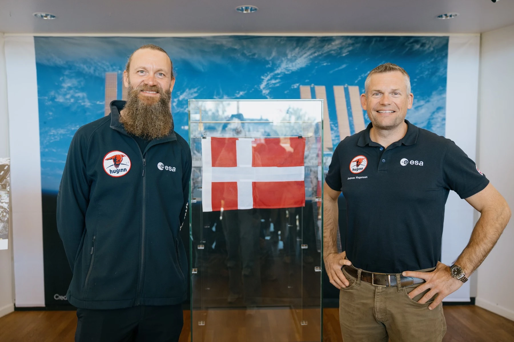

Andreas Mogensen - Danmarks egen rumhelt

Kender du Andreas Mogensen? Han er sgu Danmarks svar på Buzz Lightyear - bare i virkeligheden!
Fra nørd til stjerne
Andreas startede som en helt almindelig dansk fyr, der var vild med rummet. Han knoklede røven ud af bukserne på uni og endte med at score en PhD i rumfartsteknologi. Talk about aiming for the stars! ✨
Første dansker i rummet
I 2015 skrev Andreas historie, da han som den første dansker nogensinde røg ud i rummet. Han tilbragte 8 dage på Den Internationale Rumstation (ISS) og lavede en masse sindssyge eksperimenter. Tænk at være den første dansker til at se Jorden fra rummet - episk!
Tilbage til stjernerne
Men en tur var ikke nok for vores danske rumhelt. I 2023 tog han afsted igen, denne gang på en mission kaldet "Huginn" (opkaldt efter en af Odins ravne - how cool is that?). Og guess what? Han blev den første ikke-amerikaner til at være pilot på et SpaceX-rumskib
Ikke bare en astronaut
Andreas er ikke kun en badass i rummet.
Han er også:
1. Pilot (selvfølgelig)
2. Undervandseventyr (han har boet i et undervandslaboratorium)
3. Hulemenneske (han har trænet i underjordiske grotter)
4. Foredragsholder (han deler ud af sine vilde oplevelser)
Hvorfor er han så sej?
1. Han beviser, at selv en almindelig dansk fyr kan nå stjernerne (bogstaveligt talt).
2. Han laver vigtig forskning, der kan hjælpe os med at forstå klimaforandringer og meget mere.
3. Han inspirerer unge til at drømme stort og forfølge deres passion for videnskab og teknologi.